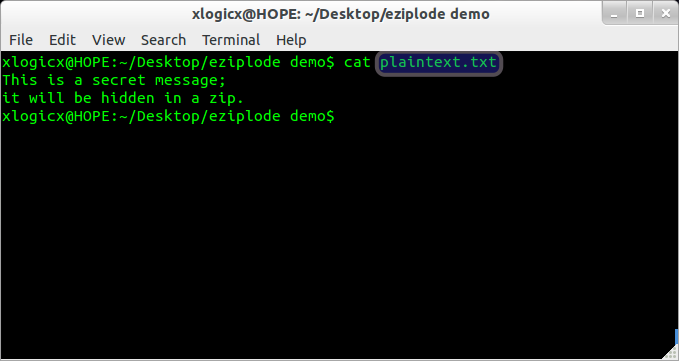
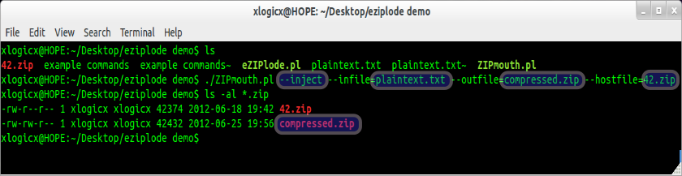
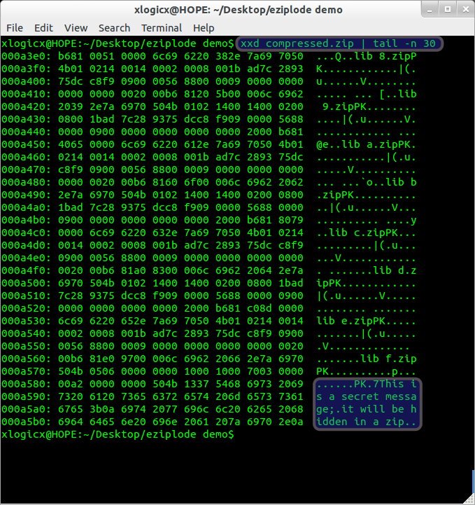
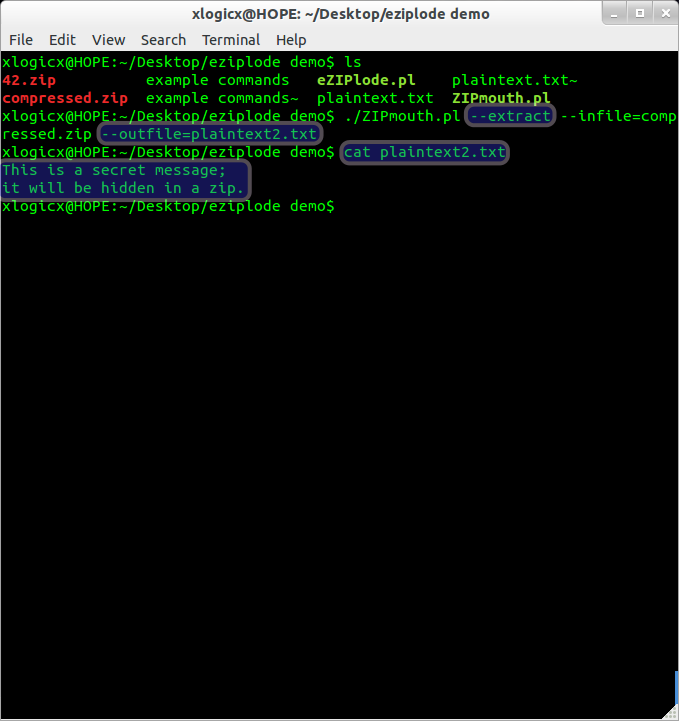
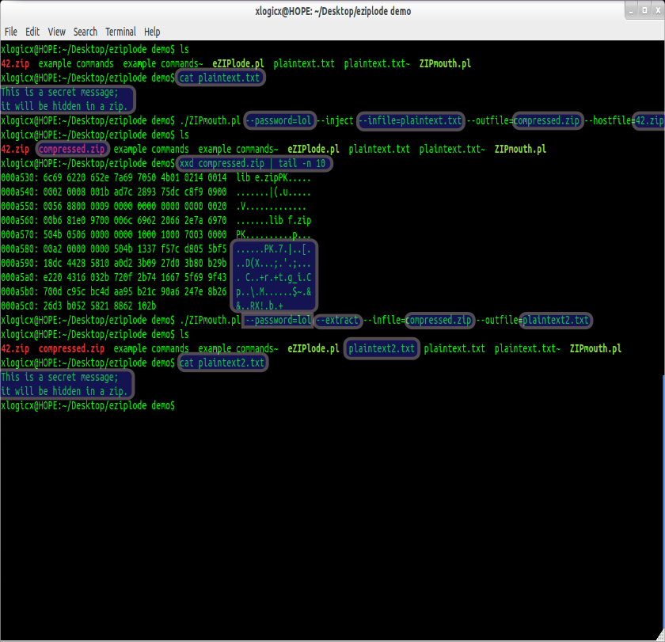

Your browser doesn't support the features required by impress.js, so you are presented with a simplified version of this presentation.
For the best experience please use the latest Chrome, Safari or Firefox browser.
ZIPmouth
-Screenshot Usecases
-Showing the contents of plaintext.txt

-Showing contents of folder
-Running tool to 'encrypt' contents of plaintext.txt out to compressed.zip using 42.zip as it's template
-Showing the modified contents of folder

-Showing the un-encrypted results of the compressed.zip
-Notice that the message is located at the very end of file, right after a fake PK header

-Showing the current directory
-Extracting the 'stego' from compressed.zip and putting it in plaintext2.txt
-Displaying the contents of plaintext2.txt

All of the above, but this time with encryption.
